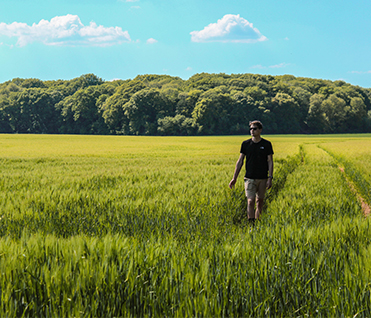

Nisan
Toprak Analizinde Sık Yapılan Hatalar
Numune alma ve yorumlama aşamalarında dikkat edilmesi gereken adımlar.
Devamını Oku
Mart
Bitki Beslemede Fenoloji Odaklı Yaklaşım
Dönemsel ihtiyaçlara göre program oluşturma ve izleme.
Devamını Oku
Mart
CBS ile Parsel Bazlı Yönetim
Uydu verisi, arazi gözlemi ve veri analitiğini birlikte kullanma.
Devamını Oku